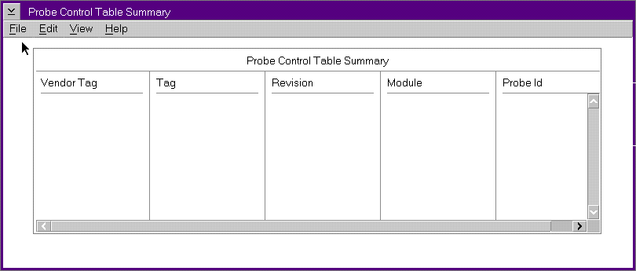

Use the Probe Control Table to control individual calls to the FFSTProbe function.
Access the Probe Control Table by entering the FFSTCONF command, or by clicking on the FFST Setup icon in the Problem Determination Tools folder. When the FFST Setup window appears, select the Actions option and choose PCT.
You can use the following window to view all the defined PCT entries.
Probe Control Table Summary Window

After you select an entry on the window, use the following action-bar items.